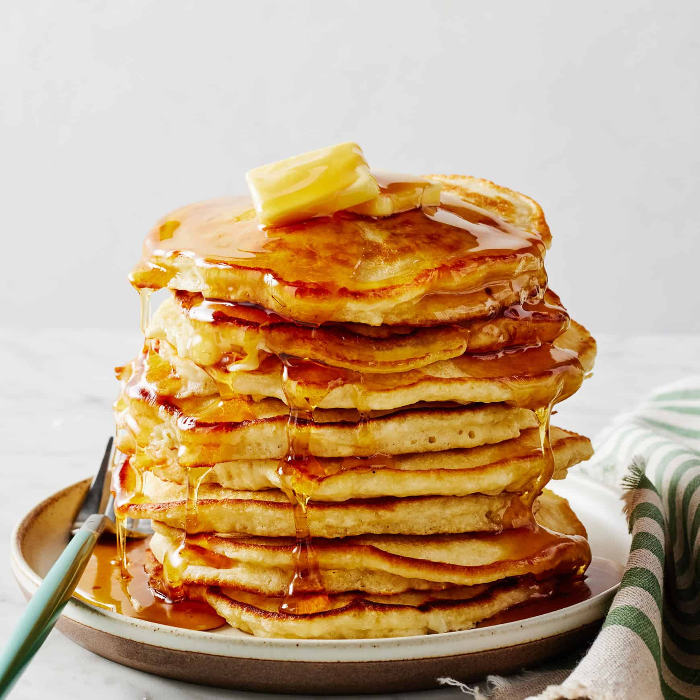

Fluffy Pancakes Recipe
Home

Ingredients for recipe:
- 1 ½ cups all-purpose flour
- 3 ½ teaspoons baking powder
- 1 teaspoon salt
- 1 tablespoon white sugar
- 1 ¼ cups milk
- 1 egg
- 3 tablespoons butter, melted
Instructions:
- In a large mixing bowl, sift together the flour, baking powder, salt, and sugar.
- Make a well in the center and pour in the milk, egg, and melted butter; mix until smooth.
- Heat a lightly oiled griddle or frying pan over medium-high heat.
- Pour or scoop the batter onto the griddle, using approximately ¼ cup for each pancake. Brown on both sides and serve hot.
- Top with your favorite syrup, butter, and fresh fruits if desired. Enjoy your fluffy pancakes!